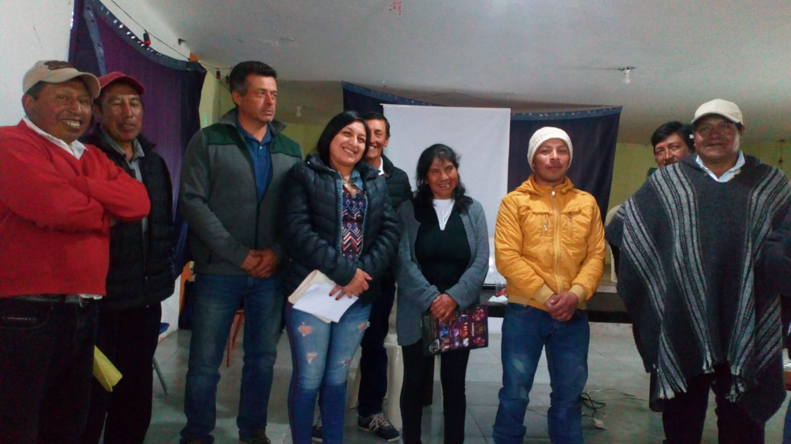
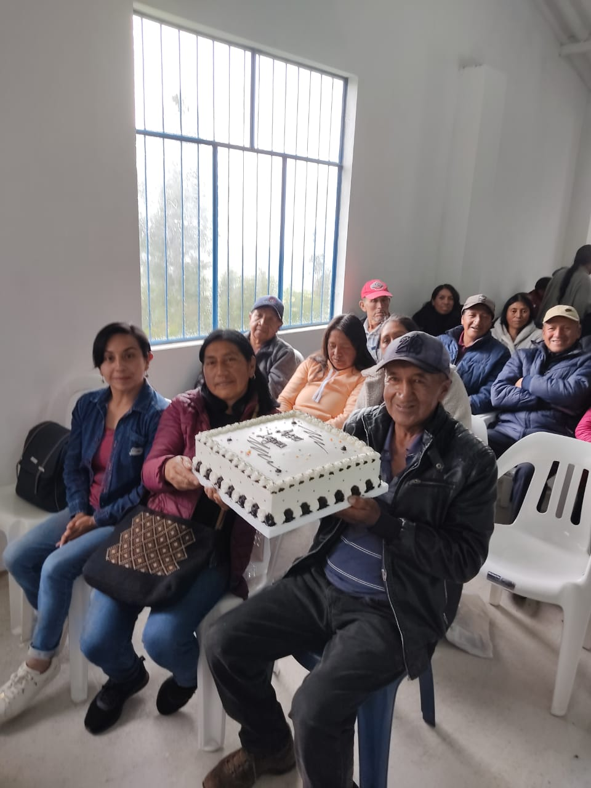
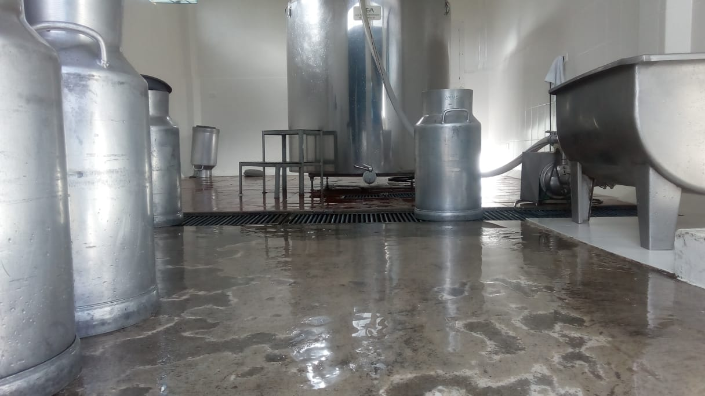

Asociación Agropecuaria La Laguna ¶
La Asociación Agropecuaria La Laguna, una organización comprometida con el bienestar de nuestros asociados y la comunidad en general. Fundada con el propósito de impulsar el desarrollo socioeconómico en el corregimiento de La Laguna, Municipio de Pasto, nuestra asociación se ha dedicado incansablemente a mejorar la calidad de vida de los productores agropecuarios y sus familias.


En la Asociación Agropecuaria La Laguna, creemos firmemente en la importancia de la cooperación y la solidaridad. Nuestra misión es proporcionar un apoyo integral a nuestros asociados, ofreciendo las herramientas y oportunidades necesarias para mejorar sus actividades productivas y comerciales. A través de programas de capacitación, asistencia técnica y el fortalecimiento de las capacidades locales, buscamos empoderar a nuestros miembros para que puedan alcanzar su máximo potencial.
Uno de nuestros pilares fundamentales es la comercialización de leche, un producto esencial para la economía local. Trabajamos en estrecha colaboración con empresas dedicadas a la venta de leche, creando alianzas estratégicas que benefician tanto a nuestros productores como a los consumidores finales.Nos esforzamos por garantizar que la leche producida por nuestros asociados cumpla con estándares de calidad, asegurando así un producto nutritivo y seguro para todos.

Nuestro compromiso con la calidad no se detiene en la producción de leche. Nos dedicamos a fomentar prácticas agropecuarias sostenibles que respeten el medio ambiente y promuevan la salud y el bienestar de la comunidad. Entendemos que el desarrollo rural no solo implica mejoras económicas, sino también la creación de un entorno saludable y sostenible para las futuras generaciones.
Misión¶
Nuestra misión en la Asociación Agropecuaria La Laguna es promover el bienestar socioeconómico de nuestros asociados y de la comunidad mediante el mejoramiento continuo de las actividades productivas del sector agropecuario. Nos comprometemos a facilitar la comercialización de la leche, trabajando en colaboración con empresas dedicadas a la venta de productos lácteos y garantizando estándares de calidad en la producción. Fomentamos la solidaridad, la ayuda mutua y la creación de una conciencia colectiva sobre la importancia del trabajo asociativo, apoyando a nuestros miembros con programas de capacitación, asistencia técnica y el desarrollo de capacidades locales. A través de la integración de esfuerzos interinstitucionales y el respeto por el medio ambiente, buscamos construir un entorno sostenible y próspero para todos.
Visión¶
Aspiramos a ser una entidad líder y referente en el desarrollo agropecuario, agroindustrial, comercial y de servicios en nuestra región. Visualizamos una comunidad de productores agropecuarios empoderados, que se beneficien de nuevas oportunidades y alianzas estratégicas con empresas del sector lácteo, logrando así una comercialización eficiente y sostenible de sus productos. Nos proyectamos como un motor de cambio positivo, promoviendo prácticas sostenibles que respeten el medio ambiente y fortalezcan la cohesión social. Nuestro objetivo es crear un futuro en el que la Asociación Agropecuaria La Laguna sea reconocida por su compromiso con la calidad, la innovación y el desarrollo integral de sus asociados y de la comunidad en general.